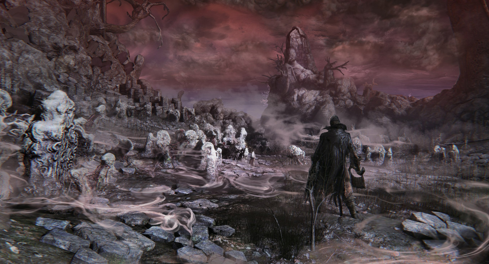
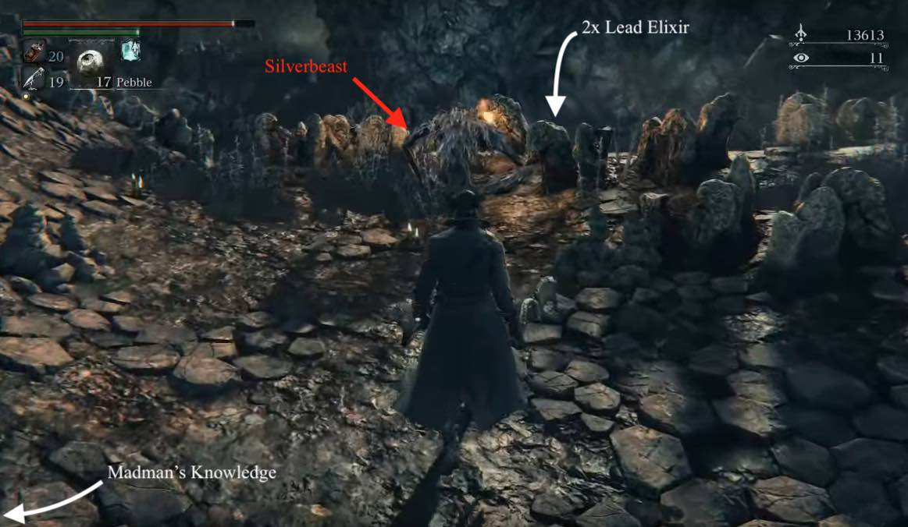
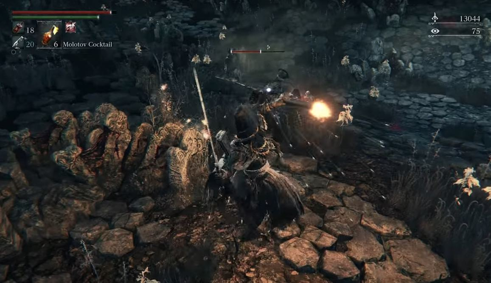
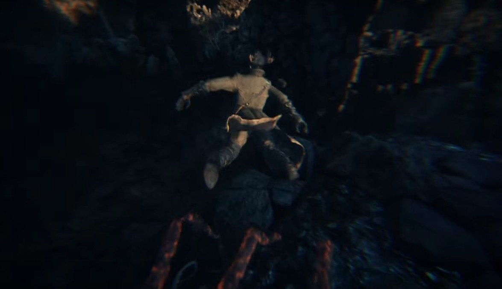
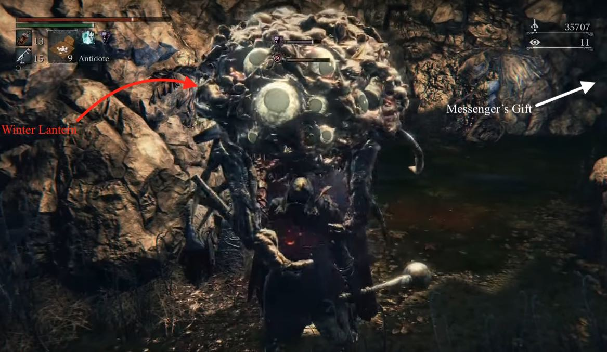
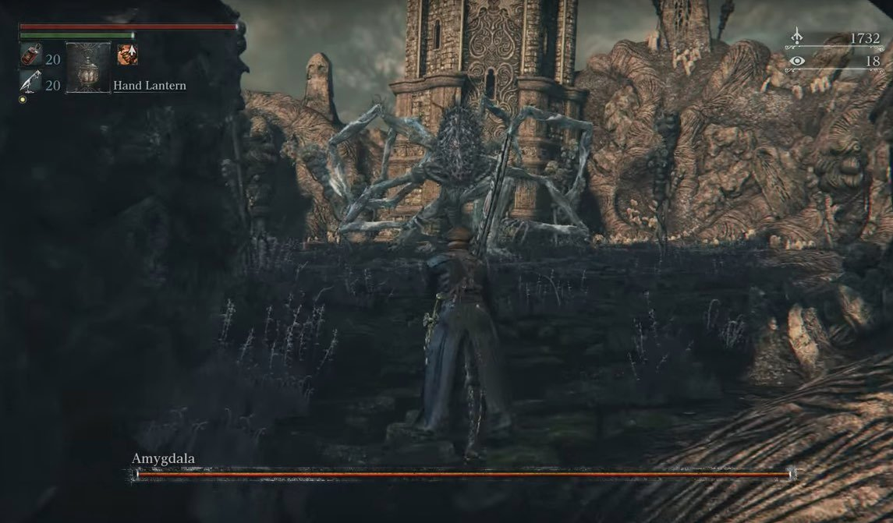

Nightmare Frontier is a location in Bloodborne. This area features an interconnected map and challenging enemies.
General Information

- Previous: Lecture Building
- Next: Forbidden Woods
- Suggested Level: 50 to 70
- Suggested Upgrade: +7 to +9
- Bosses: Amygdala
- Lamps: 2
- Insight:
- Gain 2 insight for finding Patches The Spider
- Gan 3 insight for going through the door and appearing in Nightmare Of Mensis
- Gain 3 insight for arriving on the 1st floor via the Lesser Amygdala at the entrance to Yahar'gul, Unseen Village
- Gain 2 insight for going through the door on the 1st floor and appearing in Nightmare Frontier
Lecture Building Map


NPCs in the area
- Patches, the spider (Ambush, no dialogue)
Bosses
Items
Weapons
Consumables
- Bold Hunter's Mark
- Kin Coldblood
- Lead Elixir
- Coldblood Flowerbud x4 — x2 in the swamp, x1 on the ledge on spiral path, x1 under Patches
- Frenzied Coldblood (9)
- Madman's Knowledge
- Bolt Paper
- Antidote
Specials
- Stunning Deep Sea rune - Cross bridge and go up, then fall down.
- Fading Lake rune - Slightly past where Chime maiden is, climb a narrow cliff.
- Clear Deep Sea rune - About 2/3 the way into the swamp, on dry land.
- Great Deep Sea - In a long poison swamp river under ground near the end of the zone.
- Messenger's Gift - Through a large cave about halfway through the smaller swamp (the one Patches knocks you into), near a Winter Lantern.
- Clockwise Metamorphosis - Cross the bridge towards the spider, enter a cave where you see the rock throwing golem turn around and travel through a tunnel where you will see the rune
Enemies
- Silverbeast
- Wolf Beast
- Scurrying Beast (Wandering Madness)
- Large Scurrying Beast
- Giant Lost Child
- Crawler
- Hateful Maggot
- Chime Maiden
- Winter Lantern
- NPC hunter
- 1 uses hunter's axe and pistol, very aggressive but can be easily parried due to hunter's axe's slow speed. (never shoots his pistol)
- 1 uses threaded cane and blunderbuss, tends to use firearm more than melee.
- The axe wielding hunter appears before the cane wielding hunter. If the player does not advance further when spotted by the first, there is a chance that the second will not realize his friend is fighting at all, allowing them to be taken out one by one.
- Drops 1 lead elixir each when killed.
Notes
- To get to the Nightmare Frontier you need to travel through a glowing door on the 1st floor of the Lecture Building. There are 2 ways to get to the Lecture Building:
- Approach the Grand Cathedral (where Vicar Amelia is located) and turn right. Continue beyond the two hostile hunters you may or may not have already encountered. If you have defeated the Blood-Starved Beast, there will be a Snatcher on the path you are to follow. After a few enemies you will approach a building. While attempting to open the door within you will be transported by a Lesser Amygdala, but only if you have the Tonsil Stone. If you do not, you will simply be grabbed and killed
- Alternatively you can get into the nightmare frontier without the tonsil stone. For this you must kill The One Reborn and react to the mummy and be transported to the lecture building, from there you can go down the ladder behind the giant, and talk to Patches. He will then move out of the way of the door and you can get to the 1st floor lamp and also the Nightmare Frontier.
- Once you've made it to the first floor, find a big door in a hallway in Lecture Building (ground floor). Travel through the glowing door from the Lecture Building, and there will a lantern that you can light to travel to the Hunters Dream.
Nightmare Frontier Walkthrough
Entering Nightmare Frontier
Upon arriving, the player finds themselves in a cave with a lamp. However they cannot return to Hunter's dream at this point because of a Chime Maiden's presence if the bell resonates with a Sinister Resonant Bell. After exiting the cave, you'll notice a ramp on your immediate left, instead of going up it right away, kill the Scurrying Beast hidden to the right of the slope. Advance after killing it. Atop the ramp we see a Silverbeast sitting with its back facing the player, with a Madman's Knowledge hidden on a body on the left. Backstab the beast for an easy kill. Right underneath it, you will find a cave with an elevator shaft - it is a shortcut leading right to the boss, but cannot be accessed at the moment. 2 Lead Elixir can also be found on a body here.

When advancing further, stick to the right ledge and you will find another Silverbeast sitting near the ledge and a Large Wandering Madness right next to it. Try to kill the Large Wandering Madness as soon as possible before the other gets a chance to attack you(Dropping down into the swamp here allows you to obtain the Messenger's gift. This will be elaborated upon at the end of this guide.). Advance and you will see yet another Silverbeast sitting with its back facing the player. Exploit this again. You may miss the Wandering Madness on your way to the Silverbeast if you're not careful, as they blend in with the environment; keep an eye out for Wandering Madness all over the map, they're everywhere! You will then cross a bridge, after which will cause an attack from 2 NPC hunters.

After dispatching them, continue forward until you can walk up the ramp on the left, jump over the gap and obtain a Fading Lake rune. A Madman's Knowledge can also be found below the gap. Advance to the right past the ramp and you will see a branching path, one of which leads to a large poison swamp. If you are playing online, go that way: we have unfinished business with the Chime Maiden. Do not enter the swamp; rather, stick to the right cliff and you will see a blue lantern and an opening on the cliff. Right on top of the ramp you'll find her. Greet her with a backstab-viseceral attack. Alternatively, if you wish to have an easier PvP matchmaking, it is advised to keep her alive for PvP dedicated purpose, especially the opening area right after the lamp is a convenient PvP location.
We may now return to Hunter's Dream. As the next area is much more dangerous, this is recommended if you wish to spend your echoes first.
Both branching paths lead to the boss, but the one on the right is recommended since the poison swamp is huge and there will be Yetis throwing boulders at you Nonetheless, there are a few items (mainly coldblood consumables) in the swamp so it might be worth taking a bit of time and picking them up.
Right Path
Taking the path to the right and you find yourself in a tunnel with a Silverbeast. However this one is more dangerous as it fights you on all 4s (whereas the other ones stand upright and wield a torch at first). You will also find 2 Blood Vials on a body and a Wandering Madness near the exit of the tunnel. A large area follows, with 3 Yetis throwing boulders at you. Care should be taken if you intend to take them out, as their boulders are deadly; the boulders can still deal damage after crashing for a couple of seconds, so beware of this. Alternately, it's easy enough to run past them since they are slow and do not chase the player. To continue, take the path on the left (the Yeti on the right stands near a dead end), where a Silverbeast can be found. Their boulders can still hit you from here, so keep running or take cover behind a pillar while you fight.
After dealing with the third yeti, you should go through a tunnel and arrive at an area with three branching paths. To the right, is a Wandering Madness and nothing else. The one straight ahead will take you right back to your starting point (near the lamp), note that standing at the end of the tombstone will cause it to fall down and act as a convenient shortcut. To progress further, head left. Look to your right while on the bridge: is our old friend Patches clinging to the wall! As you would've guessed, Patches is no bueno in any Formsoft game, and just as he did in Dark Souls, he'll lure you in with shiny loot and throw you over the cliff in an edgy cutscene. Don't feel too hard done by, you'll get your chance at revenge.

The next step is to collect the gift Patches has prepared for us: a Coldblood Flowerbud. Next, climb up the ramp on the left to pick up 2x Blood Vials and a Scurrying Beast, but do not drop down from there; rather, turn back and enter the tunnel where you can see a Yeti standing near a ledge, who would be terrorizing you should you have walked into the swamp from the beginning. After dealing with him, turn right and go down, picking up 2 more Blood Vials on the way. We will now have to drop down into the swamp. Make sure to equip Antidotes as the swamp inflicts slow poison on you. After picking up a Great One's Wisdom and killing the 2 Parasitic Leach guarding it, exit the tunnel (turn left) into the great swamp and walk towards your right. You will soon see a blue lantern and a Yeti next to it: there is the exit.
Once there, make sure you have your health healed to full. We will come across a Winter Lantern. Here's a few things to note:
- You are subject to frenzy build up on sight.
- Kill it as fast as possible, but avoid getting grabbed, which spells certain death.
- If you have any Sedatives make sure to have them on hand. If your frenzy gets too high back off and then use them, it'll reduce your frenzy build-up allowing you to score some hits.
- Be careful around this enemy as even when retreating your frenzy will continue to build as long as you are in the line of sight of the Winter Lantern.
- If the effect reaches the top, expect your head to literally pop off.
- You can also just run straight past it, as it is alone, however your frenzy will continue to rise as long as it can see you, so you'll have to run a fair distance down the hill before you're in the clear.

While running past the Winter Lantern is also an option, there is a Large Scurrying Beast hidden nearby, killing it is recommended; it is found by standing at the Winter Lantern's initial location, turning back to where you came from, and look to the lower area on the right. This beast is especially valuable since it drops 2x Blood Stone Chunks as opposed to the Twin Blood Stone Shards like rest of its brethren do. In one of the two passages here, you can find the Messengers' Gift.
Trip to Amygdala
Over the jellyfish's corpse we arrive in another large area, with more poison swamp on the right. There are a few Coldblood consumables and a Caryll hidden within the swamp, but before we do that we need to first activate the shortcut mentioned earlier. Go straight ahead, avoid dropping into swamps with fallen stone pillars along the way. Do not turn left onto the bridge where a large building can be seen on the other side yet; that's the boss arena. Keep going straight and we soon come across the last Silverbeast we need to fight, patrolling a flight of stairs which leads to the elevator shaft. Now that we can transit directly from the lantern and the boss arena, that's where we are headed.

BOSS FIGHT: Amygdala
Nightmare Frontier Maps
 Anonymous
Anonymousworst area in any of these games bar frigid outskirts and ephael
- Anonymous
To the invader who "greeted" me and then sarcastically clapped when I hit them with the numbing mist: All I'll say is I'm not sorry at all I one shot you with the Chikage during your passive-aggressive display. Now cry about it on reddit.
- Anonymous
Note that Messengers' gift has a hyperlink attached to a 404 when brought up with the location
- Anonymous
worst area in the game
would have been cut by any competent dev
- Anonymous
Would it be worth it to add a description of the area? Mention that there's a lot of stone everywhere, though I don't know the specific name of these kinds of stone formations that form hills, and that a lot of white flowers grow everywhere. There are also formations of water between the rocky outcrops, usually the size of a pond or a very small lake.
- Anonymous
This guide is wrong about where the location of the Messengers’ Gift is. There are two Winter Lantern monsters on this stage. The one that you find after the cave with the yeti is not the one anywhere near the messengers gift. To get this go to where patches knocks you into the swamp and turn right. Run down to the end and there will be another Winter Lantern guarding the Messengers Gift.
- Anonymous
I love that artwork but the area is green overall rather than red
- Anonymous
If you look far in the distance you can see the building from Nightmare of Mensis, and vice versa....
- Anonymous
Even the most dreaded areas have their moments. Exiting the cave after the first poison swamp and looking over the cliff side at the fishing hamlet ships in the distance is so relaxing.
- Anonymous
One of the few areas in the series I "forget" to go to in ng+ cycles. Hey, at least this game's poison swamp isn't mandatory
Obligatory Fromsoft *****ty poisonous swamp. You can tell an area design is garbage when you are BL 120 with end-game gems on +10 weapons and the area still sucks every bit as much as it did when you cleared it normally. Put me in a cursed depth 5 chalice dungeon any day over this chore.
- Anonymous
- Anonymous
- Anonymous
- Anonymous
Has anyone else seen that spinning thing in the distance? It's right outside the cave you start in and to the right between the boss arena and the cliff face.
- Anonymous
Worst area to traverse Best area to invade I see what you did there, FROM.
- Anonymous
- Anonymous
If you stand sit at the lamppost in the Nightmare Frontier, the cries of the newborn can be heard in the background.
- Anonymous
- Anonymous
Through a series of highly unfortunate events, I'm on my first ever play through and got here at level 26. -1/10 do not recommend.
- Anonymous
How to get past the lake I was pushed into? Is there something I should have, or what because I'm at level 80 , and just got here. Just stock up?
- Anonymous
One question: what the HECK are those giant drumstick-looking things all over the place? Giant hemorrhaged tombstones don't concern me, it's those ritualistic murder mallets that get me goosed.
- Anonymous
If you want to get here early get the tonsil stone are get grabbed by the amigdala. I haven't beat the shadows of yarhnam. Also I am on new game plus. I don't think that changes stuff but who knows
Maybe you haven't red the first part of the page...
The walkthrough is in the middle of the pageItems
Stunning Deep Sea rune - cross bridge and go up, then fall down.
Fading Lake rune - slightly past where Chime maiden is, climb a narrow cliff.
Clear deep sea rune - 2/3 the way into the swamp, on dry land.
Great Deep Sea - in a long poison swamp river under ground towards the end of the zone
Messenger's Gift - through large cave about halfway through the smaller swamp (the one Patches knocks you into) on the right side. You'll pass a frenzy causing brain trust (a very detailed guide can be found at the end of the playthrough section of this page)
Clockwise Metamorphosis - Cross the bridge towards the spider, enter a cave where you see the rock throwing golem turn around and travel through a tunnel where you will see the rune
Coldblood Flowerbud x4 - 2 in the swamp, 1 on the ledge on spiral path, 1 under Patches
Frenzied Coldblood (9)
Bold Hunter's Mark
Kin Coldblood
Lead Elixir
Madman's Knowledge
Bolt Paper
Antidote
- Anonymous
Why don't you say what Carrull Rune is to be found in the swamp? Why even bother writing this walkthrough if you're not going to say what items are there??
- Anonymous
So, besides just pussying out of fighting them and going off the side of the ledge, how the hell do you fight the big, 1000 eye brain things that frenzy you for no reason?
- Anonymous
Personally, the poison in this area is so small the damage is negligible. if you go into the poison swamp (before amygdala) with >2 blood vials you can kill everything and get all the loot, but that amount may change depending on weapon and player skill. The silverbeasts (fire-breathing leech demons) won't spawn leeches if you kill them via fire or visceral attack, but the easiest way is probably just equipping a fire blood gem. The boulder throwers can go impal- I mean, they are surprisingly accurate despite the fact that they're throwing boulders, and pissing off one and then turning your back to it for half a second can result in your untimely demise (Get it? Second? Untimely? Ah... The night and the dream were long...). Winter lanterns should probably be rushed up to and have their skulls imploded as soon as possible (New game, I'm using a Pizza Cutter (Whirligig Saw) +9 with 2 13.5% ATK gems and one 12% ATK, and about 50 STR so I can 3-hit them without frenzy, but bring sedatives just in case), listen for their deep odd humming and get all the loot you can from the wandering madnesses. Side note: Do be careful about dodging it's grab, because that's basically guaranteed to trigger frenzy. Amygdala can be hit with Ludwig's Holy Blade's L2 at practically any time, but definitely deal as much damage when it slams its head down. The last phase is the worse; its reach is longer than 2 streetlamps engaged in lovemaking except that one is having a seizure and the other is driving a tank; but definitely go for the viscerals as they signal the phase changes, and if you can get to the last one you can practically skip the last phase, or at least most definitely aid you a lot. Hilariously enough, don't run immediately to the tower if it's the first time in this playthrough, it can actually squish you.
But yeah, not a great area, but definitely not the worse either. That's reserved for another special nightmare *Cough cough Mensis *Cough *Cough
- Anonymous
FROMsoft: Lets make a really fun game that is hard but fair and relies on players skills determining their survival rather than gimmicks and impossible difficulty spikes.
Also FROMsoft: Lets make an entire area of every game we make a stupid f***ing gimmick that irritates everyone, and isn't actually fun in any way! IE: Valley of Defilement, Blighttown, The Sewers, THIS, Farron Keep...
- Anonymous
the guy does shoot his gun and it has destroyed me many times
- Anonymous
A few tips for going through this area:
1. I heartily suggest that you get the Graveguard's set from the Forbidden Woods before coming here. It has decent defenses, as well as a good combination of frenzy and slow poison resistance. I'd also suggest putting on some deep sea runes for slow poison resistance and frenzy resistance.
2. The Silverbeasts (guys with sideways heads) can easily be dealt with by stun-locking them, either with a small, quick weapon, or heavy attacks from a heavy weapon. Their electric explosion can hit somewhat hard, and they do get hyper-armor from it, so when you see them charging I'd suggest backing off. (Although having the Graveguard set I mentioned earlier can help with this, as it has decent bolt defense.) Keep in mind that at about half health, they'll discard their torch and drop to all fours, changing their moveset to be very similar to a normal scourge beast. Some of them start out in this state.
3. The boulder-throwing giants are surprisingly accurate given their large aggro range. However, as long as you keep moving linearly, you should be fine. Keep in mind that the rubble from their boulders ALSO deals damage, so hiding behind a gravestone might not be enough to protect you, and a direct hit from a boulder will deal damage twice (once from the boulder, once from the rubble that results on impact), which can easily one-shot a player who isn't very beefy. However, once you close the distance, they can, despite their size, be easily stunlocked by even the smallest weapons. Just keep in mind that some of their melee attacks grant hyper-armor, but their reach generally isn't very far, and their attacks are well telegraphed.
4. This should go without saying, but spend as little time as possible in the poisonous swamp, and, except when you're near a Winter Lantern, you should always have antidotes up for quick consumption. The leech monsters can generally be ignored, as they're slow and their ranged attack is relatively non-threatening, and their melee thrashing, while dangerous, can be avoided by simply not being near them. If you do wish to fight them, I'd suggest luring them out of the poison first.
5. There are two winter lanterns in the area (one that's in the player's path to the boss/shortcut, and one guarding the Messenger's Gift hunter tool), when the player approaches them, their tell-tale humming can be heard. As soon as you see or hear them, equip sedatives, just in case they've spotted you. If you're careful, the winter lantern in your path to the boss can be backstabbed, as she has a patrol route that leaves her back open. (Apparently the eyes on the backs of their heads don't work?) If you are spotted by one, beat her down while being careful to avoid her grab, as your frenzy will continue to increase while her lengthy grab animation plays out, generally spelling doom. I've heard that raising the Wooden Shield can block their frenzy-inducing gaze, but I haven't tested that, so I can neither confirm nor deny.
6. The area boss, Amygdala, is large enough and tall enough that locking on can make it very difficult to get a good angle on it. I'd suggest fighting not locked on, especially since the areas that can be locked onto (its head and its torso) are out of reach for many weapons anyways. Its arms are much more vulnerable to damage than its legs (which will generally take single digits of damage), and its head is very, very vulnerable to damage. If using a bloodtinge build, a few good shots from Evelyn or Simon's Bowblade to its head can really ruin its day. If using an arcane build, various hunter tools, such as A Call Beyond, Executioner's Gauntlets, Blacksky Eye, and Cursed Brew will also deal quite a lot of damage to its head. If using neither of these builds, standing beneath it and attacking its arms is a very safe bet, as long as you keep an eye on its movements so that you can tell when its about to try to beat you like a drum. It will sometimes lower its head if you damage it enough or after some attacks, and it is valuable to take advantage of these opportunities to deal damage to its vulnerable head.
- Anonymous
Guys, just so you know, there is a great one's wisdom on a body near from where you drop from Patches' ambush. Now I believe that this wiki needs a fixin'!
- Anonymous
- Anonymous
I hadn't talked to the guy that gives tonsil stone nor did I have it but still got taken to nightmare front. It grabbed me during a long studder. Anyone had this happen or did it get patched or something?
- Anonymous
I'm stuck in the level and finding it pretty hard going. Where should I be heading to find a lamp to get back to Hunter's Dream?
I did see light for summon like with Alfred for me once i did the cut scene it was gone , it was just before go down the spider also what with the coins ???
- Anonymous
I got the Fading Lake rune where this page says you get the Deep Sea Rune.
- Anonymous
Sorry about if this is confusing or not but I was pretty lost haha. On the way to we the spider that knocks you off into the water you will find a tombstone thing which is kind of jutting out into the air. If you walk onto the tip you will cause it to fall creating a bridge which connects to the beginning of the area.
- Anonymous
I think there is one ennemy missing. The thing with lots of eyes on it's head that tries to grab you. It also cause the statut effect frenzy
- Anonymous
- Anonymous
I did see light for summon like with Alfred for me once i did the cut scene it was gone , it was just before go down the spider also what with the coins ???
- Anonymous
So I went to Nightmare Frontier, I can handle every enemy easily, except those giant that throw rock from the long distance. If it hit me, most of time it one shot me. Very frustrating.
- Anonymous
- Anonymous
Can someone please help me through this area it's always the brain trust that kills me
- Anonymous
Where are the NPCs sans Patches? This place doesn't look like it holds any people.
Anyone know what those things are? They look like the wolf beasts, but have a lightening attack similar to the Darkbeast Paarl's AOE. I should probably mention that I currently have 58 insight.
- Anonymous
Just returned to the area via amygdala s chamber, running up the gravestone ramps to the right I get to an area where I hear singing, like a 3 part gospel group. just below where that drop is by the ramp. What is it? 60 insight
- Anonymous
Does anyone have any idea where this area is in relation to Yharnam? I know how to get there and everything but I am curious as to where it is in the world. It seemed you can see the Nightmare of Mensis from this area but no Yharnam. The only other landmark I really noticed was the tall tower or lighthouse shrouded by the mist in the Nightmare of Mensis. It seems odd since the rest of the game is quite well linked.
Who hates PvP and goes offline every time they go here and the Nightmare of Mensis? The few times I forget and am invaded I have won 70% of the time and still hate it.
- Anonymous
I have no idea where Amygdala is because it doesnt show which direction on the nightmare frontier part 1 you go to fight Amygdala
- Anonymous
Can someone help me right now? I'm stuck with this boss and no one is visiting this place
- Anonymous
i killed the maiden but still cannot go back to hunter's dream.... why?
- Anonymous
Does anybody know why the leeches (squids) have messengers within them? They show when it uses the rapid poison cloud. Thought it was interesting, but there's no info on them.
In the area of the 3 rock throwing yetis there is a Scurrying Beast next to the first yeti on the left
- Anonymous
So... when i open up the shortcut. I stood at the very edge of the rock/pillar and when it fells onto the ground, I clipped through it and fell off the map. After about 2minutes of falling and finally died, I respawn in the hunter's dream instead.
Has anyone noticed if you look into the 'fog' below the nightmare, especially when overlooking Amygdalas chamber you can see what look like to be ship masts sticking out? Some have 'sails' or 'flags' attached, wtf are they there for? are they even masts at all?
- Anonymous
i was rewatching my own stream a few minutes ago and after respawning i heard sobbing (maybe laughing?) right by the lamp. here's the video - https://youtu.be/bHFNai-QTIs?t=5m32s i couldnt hear it while i was playing ( i play low volume ) so idk if anyone else had heard this

says getting the messengers gift would be elaborated on, and it isn't at all
0
+10
-1